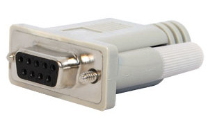

Serial Port Test |
Top Previous Next |
|
Tests the serial communications ports connected to the PC. Up to 64 serial ports may be tested simultaneously. The serial ports and test speed can be selected from the Test Preferences window (see Serial port preferences).
A serial port loop back plug per port is required to run this test. These can be purchased from the PassMark web site (www.passmark.com) or you can make them yourself (see Making Loopback plugs).
 Serial loopback plug
Each test cycle corresponds to about 10 seconds of data transmission followed by a signal pin test phase. The signal pin test phase checks that the following pins on the serial port are functioning correctly. RTS – Request to Send CTS - Clear to Send DTR – Data terminal ready DSR – Data set ready
The number of ‘ops’ corresponds to the number of bytes sent and received. The duty cycle affects the time spent waiting between cycles.
The serial port selected must not already be in use by the operating system (for example by the mouse or an active modem), for the test to be carried out.
The speed that the serial port operates at is independent from the modem speeds. Even if you have a 56Kbit/s modem your serial port may operate at a higher speed. The maximum serial port speed depends on the type of chip installed on your motherboard. Most PCs will only do up to 115Kbit/s, so don’t be alarmed if the test fails at 128Kbit/s or above.
If the “detect only” option was selected in the preferences window then the loopback test will not be performed. The presence of the serial port in the system will still be checked for however.
The following information is displayed for each port being tested.
Serial Port This is the name for the serial port being tested. The port can be selected from the Test Preferences window. Any port between /dev/ttys0 and /dev/ttyS63 is supported.
Speed This is speed that the serial port is configured for. The speed can be selected from the Test Preferences window.
Bytes Sent This is the number of bytes that have been sent to the serial port.
Bytes Received This is the number of bytes that have received from the serial port.
Errors This is the number of errors detected (see Appendix C, p.48).
Throughput This is the real measured throughput for the port. This will generally be less than the Speed (see above) as there is some overhead in the code and in the data transmission itself (e.g. Stop bits).
Compatibility issues You need to have administrator privileges to run this test.
|